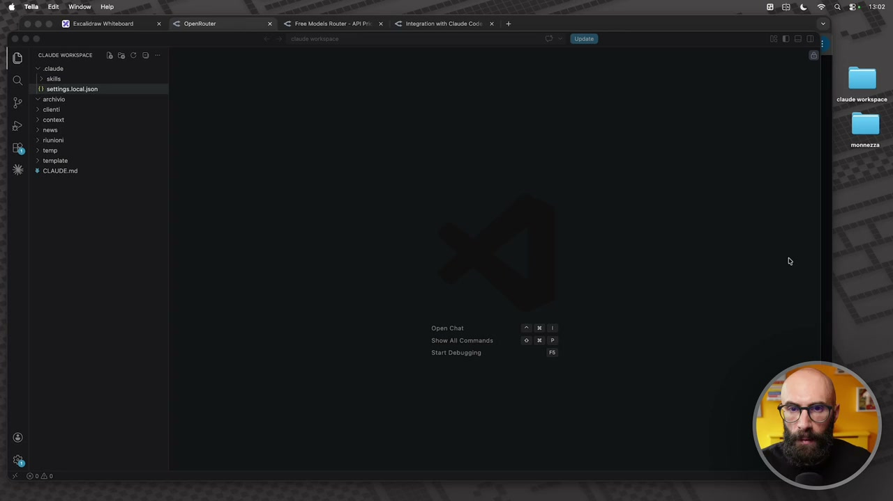
OCR: @ Tella Eat Window Help *EvCLO0 EB Encarta + laude 1) settings cal json < archivio ter > tempio + cUAWDEMI < Open < reo Models Routr - API < integrato wi Ciad Cod Open chat Show All Command + Bd CB 10 O % laude workapace
Vi faccio vedere come possiamo utilizzare Cloud Code anche senza avere l'abbonamento a Cloud. Usiamo lo strumento Cloud Code, l'ambiente Cloud Code, ma sotto il cofano non stiamo utilizzando l'AI Cloud di Antropic, ma ci colleghiamo un'altra. Questa cosa porta il vantaggio evidente di risparmiare soldi, perché non facciamo l'abbonamento a Cloud, il modello di Antropic, però come vedremo porta anche degli svantaggi. Di solito questi svantaggi non li racconta mai nessuno, però in questo corso è importante che vi faccia vedere la cosa al completo. Allora, per farlo, usciamo un attimo dal nostro workspace che abbiamo utilizzato fino ad ora per tutte le lezioni. Mi creo una nuova cartellina qua sul desktop e la chiamiamo, diciamo ci mettiamo un nome così di temporaneo, workspace di prova, facciamo così, workspace di prova, in modo tale che non mischiamo le cose,
OCR: @ Finder File Edit View Go Window Help) BO cs a Bo EB ca tania x Open BE Fre Made Rote - PIP x_| < Ign with Cn Cose x (+ n ciuveomence (fa CO DES arenivio > clienti smpIto * cLAUDE Md *geveoo Open chat È Show AIl Command è Start Debugging di
perché dopo torneremo a lavorare sul nostro workspace ufficiale. Cosa facciamo qua? Dentro il nostro VS Code ci apriamo una nuova cartella ed è questa qua, workspace di prova. In questo modo stiamo partendo proprio da zero, diciamo che conosciamo gli autori di questa cartella, ci fidiamo, tanto è la nostra cartella. La prima cosa da fare dentro questa cartella, creiamo una cartella vuota che si chiama .Cloud, perché dentro questa ci andremo a mettere un file che ha delle impostazioni specifiche. In pratica useremo un servizio esterno che si chiama Open Router, che fa un po' diciamo da router, come dice il nome, si fa da uno strato intermedio, tu chiami il loro servizio e poi sotto loro chiamano vari modelli, tra cui anche quelli gratuiti. Non vi preoccupate, tra un attimo questa cosa ve la faccio vedere anche con uno schemino. Ho già tutto pronto qua, ho visto che questi schemini nel corso vi stanno piacendo parecchio,
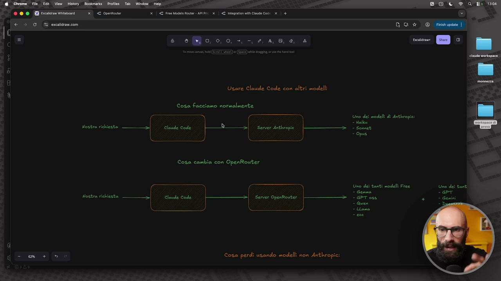
OCR: @ Chrome File Edit View History Bookmarks Profiles Tab Window Help. DO Ba ce a 8 106 [IR x] < Free Made Rauter API Prix. | CE ercaldrancom GG A O Figi € 6 ea 00-48 viso (© [] Usare Claude Code con altri modelli Cosa facciamo normalmente Y Uno dei modelli dì Anthropic: — Haga Nostra richiesta ““i...;;; = Server Anthroie |> -Somet Opus cosa cambia con OpenRouter Uno dei tanti modelì Free Uno dei tant. - Genma - GPT - GPT oss Quen S J) - Uomo, Mostra richiesta —_>.| Cloude Code —|—| Server OpenRouter |> È Cosa perdi usando modelli non Anthropic:
quindi li continuerò a fare anche nelle lezioni che aggiungo dopo come questa. In pratica cosa facciamo adesso qua dentro? Dentro questa cartellina vuota .Cloud, creiamo un file che si chiama settings.Local.Json, è un file di configurazione. E ci copiamo questa roba qua, non vi preoccupate perché poi ve la metto pure qua sotto nella descrizione di questa lezione del corso. In pratica cosa sono? Sono quattro impostazioni che dicono allo strumento cloud code dove deve andare a prendere le informazioni. Diciamo senza che entro nel tecnico, perché magari qualcuno si potrebbe perdere e così via, però diciamo cosa c'è? Diciamo l'URL di base, quindi dove deve chiamare i servizi, dove deve andare a invocare questi servizi esterni. Qual è il token di autenticazione, immaginate come se fosse una sorta di password, ok? Poi l'API key, quindi la chiave per l'API e poi che modello stiamo utilizzando.
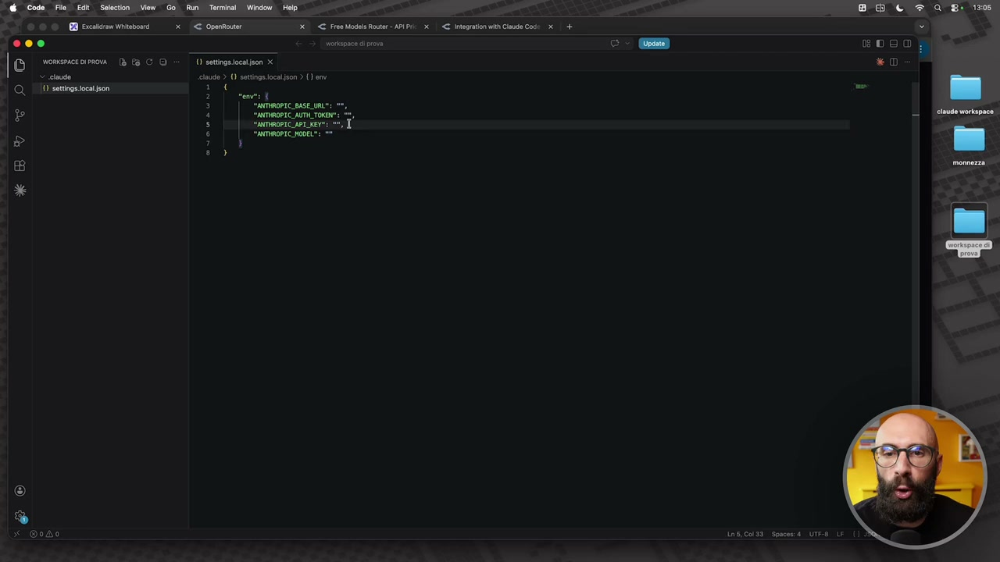
OCR: @ Code File Ego Selection View Go. Run Terminal Window Help B CF QQ B 1308 GB Paci intbonra x Open 3 < Fre nd se API PIL x < Ing wth Cne Code X_+ - © vorsicioimon DB Fa CO > ti setingssocaison x *D 5 “amore MASE URLS: =, 1a) n 2ARoPIC AIM TON: *, ef moriapoce s sameoric ante: ©, L' S è summeoPIc NopL*: * è } DI)
Vedete che tutte queste variabili hanno davanti nome Antropic, Antropic, Antropic perché sono ufficiali. Solo che noi le andremo a modificare e dentro non metteremo i valori di Antropic, quindi non scriveremo voglio usare l'ultima versione di Sonnet oppure l'ultima versione di Opus, ma ci metteremo quello che faremo qua su Open Router. Allora, questa piattaforma, vi fate un account, l'account è completamente gratuito. Una volta che siete dentro e che avete fatto il vostro account, vi lascio pure questo link qua sotto, loro offrono una valanga di modelli. In pratica cosa diciamo uno può fare? Può pagare l'abbonamento, non l'abbonamento, può mettere del credito su questa piattaforma e poi dentro può utilizzare varie cose. Può chiamare Gpt, può chiamare Cloud, Gemini, Grok, quello che vuole, pagando diciamo a consumo. La cosa interessante qual è? È che tra tutti questi che offrono, che sono centinaia, se qua sopra in realtà adesso noi facciamo un filtro con la parola free,
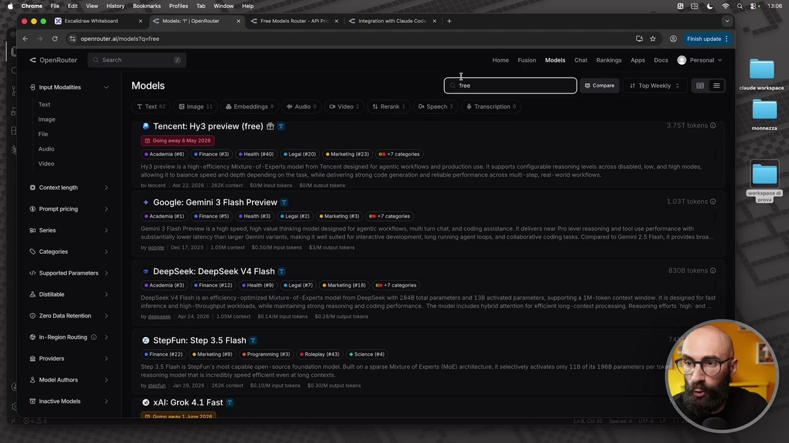
OCR: @ Chrome File Edit View. History Bookmarks Profiles. Tab Window Help. uoe="] 6 ce=musosr 2 CD GE sperone smosso Ga © ami. < OpenRouter Search 7 Home Fusion Models Chat Rankings Apps Docs @ Persona » m a iaia | > | Models E 7 co To Text image 4 Embeddings # Audio © Video #8 Rerank Pe Speech # Transcription ® Tencent: Hy3 preview (free) fi © Tiokens © 5 commer fuso ® Acagomia (#6) || ® Finance (#3) ) | ® Health (#40) | | ® Legal (#20) || @ Marketing (#23) | «ln +7 categories Meteo 1Hy3 preview Is a high efficiency Mixture -of-Experts model from Tencent designed for agentic workfiows and production use. It supports configurabie reasoning levels across led, low, and high modes, + Google: Gemini 3 Flash Preview 7 T tokens © © memo > ® DeepSeek: DeepSeek V4 Flash 7 E (0) Dona ii DeepSeek V4 Flash is an efficiency - optimized Mixture-of -Experts model from DeepSeek withi 284B total parameters and tivated parameters, supporting a 1M-toker xt ORIO A ® StepFun: Step 3.5 Flash © POI ° ©® xAl: Grok 4.1 Fast ©
vediamo che ce ne sono anche tipo una ventina completamente gratuiti ed è questo diciamo il trucco, tra virgolette passate per i termini, per usare Cloud Code ma gratis. Perché? Perché non stiamo andando a usare un modello a pagamento ma un modello gratuito. Ve ne leggo qualcuno diciamo di quelli più famosi, per esempio GptOS che è la versione open e gratis dei modelli di OpenAI. Ok, infatti andremo a usare questo perché diciamo è uno di quelli più stabili, diciamo anche interessante come risultati. Ma c'è che ne so, quelli di Nvidia, ci sono quelli di Google Gemma che sono ottimi. Quando sto registrando qua ovviamente vedete Gemma 4, magari quando vedete questo video ci sarà 5, 6, 10.000 E così via. Ma ci sono quelli di Nvidia, ci sono quelli cinesi di Quen, quelli di Baidu, c'è Lama di Meta. Quindi diciamo questa è una scelta che fate voi. Cosa facciamo adesso? Fondamentalmente noi dobbiamo andare a mettere qua dentro tre valori. Ok, non vi spaventate questa roba, sembra sempre una roba un po' più tecnica da programmatori ma voi seguite a me.
OCR: @ Code File Edit Selection View Go. Run Terminal | Window Help aa es a 8 197 EB Pai tto Modi] Openaiee x < Fre soda Rae APP | < integro ti Cinto Code x (+ 7 @ vonsicioimon dî CO li singeiceiom x *D > luo iau > 1) antipasto > () e > = ANTHROPIC.MOI Qt etica SIETE = "Mnmorte mast URL b i TAMBOPIC AM TORI: TAMBOPICAPRE: ©, î S 6 -mOPICHOEL 8) I (es) *
Io ve lo faccio vedere passo passo e vi spiego anche il concetto. Sapete che io ci tengo a darvi anche qualche elemento teorico perché così capite quello che state facendo. Non è che copiate e incolate una roba che vi ha fatto vedere uno sconosciuto su internet. Allora, la prima che dovete mettere è questo valore qua. Nella voce base URL mettiamo openrouter.Ai.Api Questa voce qui, questo indirizzo è quello che ci permette di chiamare, di invocare i modelli su openrouter. Adesso noi lasciamo vuoto questo qua. Questo diciamo lo lasciamo vuoto volutamente, anzi qua ci metto lasciare vuoto. Ok, questa roba qua significa che noi non dobbiamo mettere qua dentro l'API key in modo tale che siamo sicuri che non vada mai ad invocare il modello di Antropic perché non vogliamo passare dai modelli di Antropic in questo caso, ovviamente. Adesso ci interessa mettere il modello e out token, quindi diciamo il token di autenticazione. Questo out token lo generate facile.
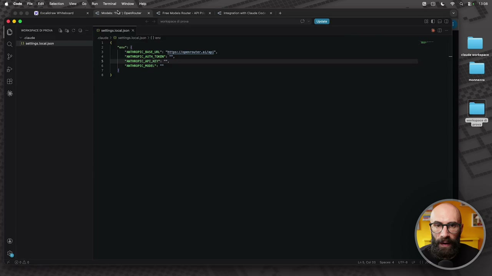
OCR: @ Code Fio Edit Selection View Go Run Terminal Window Help B © cs a 8 1308 cnr tr x Mole Opi x < Fm Me Rane APP x_| < intime Cod (+ S DO0 ES @ vonsnciomon dl 0) settings socaison x scudo iludo > (1 sotingeiocaljson > () em Q 10) settingeiocason 3 "AnimoPIE_MASE URL" “https: //opencouter.at/apd*, | 4 PANIROPICAUMI TORE", s TANTIROPICAPE REY" "", d i a) B
Come si fa? Andate qua, lo potete fare direttamente dalla home page che è più facile. Dalla home page cliccate su get API key e andate a crearvi la vostra API key. Fate qua sopra new key e qua io ci scrivo per esempio corso su cloud code. Ci potete scrivere quello che volete voi. Vi genera un codice e questo codice, io ovviamente lo cancellerò subito dopo che lo faccio vedere, che lo registro, mi raccomando non condividete mai con nessuno questo codice. Questo codice andiamo a metterlo qua dentro. È un codice bello lungo che identifica questa sorta, la possiamo chiamare una sorta di password, una sorta di chiave che ci permette di accedere a questi servizi. L'ultima cosa che rimane è questo, è il modello. Cioè stiamo dicendo a cloud code, guarda collegati a open router. Usa questo token e poi chiama questo modello. Che modello possiamo scegliere noi? La scelta che possiamo fare e torniamo qua su modelli. Filtriamo di nuovo qua sopra scrivendo free.
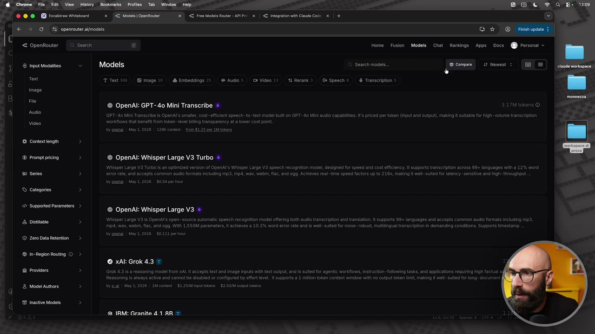
OCR: @ Chrome File Edt View History Bookmarks. Profiles. Tab Window Help DO BB poesia Witaboori © x [ST Model OpemRoiÈ || XK << Free Models Router -APIPI x | < Integration wi Clnute Code x | + elle calo mani € < OpenRouter Search 7) Home Fusion Models Chat Rankings Apps Doce @ Persona » Pen + 3 inputodaitee -—« —’Models Search model. E fesa To T Text 500 || (image 10 || Ab Embedalnge 25 || 44 Audio S| Di Video 13 |! ti Rerank 3 || I Speech © | @ Transcrpion fn image @ OpenAl: GPT-40 Mini Transcribe è 1 to) © conextienah = > ‘® Prompt pricing > ‘® OpenAl: Whisper Large V3 Turbo è © Categories > deren ® OpenAl: Whisper Large V3 è TREES M parameters, I chieves a 10.3% word etto rate an i well-suiteg for nose -robust, muti n model offering both audio transeripion and translation. li supports 9» languages and accapis common 4 Distazie > © Zero Data Retenton > © mn-Region Routing © > © xAl: Grok 4.3 7 a Providers > Grok 4.316 reasoning mode! from XA. It accepts text and image Inputs with txt output, and i suite for agntic workflows instuction-foloming tasks, and applications requiring high fact Ressoning ls always active and cannot be cisaied or configured by effort level. | supports a milion token context window wii no output token limi, making I ell-suted for ong -docun 8 Model Authors 5 May 2.020 | 10 content. SL25/(Minputtotera 52.04 aguilera EI Inactive Models (| |> Granite 4.1 ART
Vedete questi che hanno free, tra parentesi sono quelli gratuiti ovviamente. Io ho fatto diverse prove. Molti di questi modelli sono lenti, hanno problemi e così via. Dalle mie prove, quelli che funzionano meglio sono i modelli di OpenAI. Anche quelli di Google e Gemma funzionano bene. Comunque diciamo, aprite il modello che volete utilizzare di quelli gratuiti e vedete questa voce che sta qua sotto, proprio sotto il titolo? Non dovete prendere il titolo, mi raccomando. Questa sotto dove c'è OpenAI slash GPT trattino, cliccate sul pulsante per copiare. O lo copiate diciamo a mano così, vecchia scuola no? Selezionandolo col mouse come volete voi. Andiamo qua dentro e lo mettiamo qua. Non è niente di complicato, abbiamo copiato tre stringhe, ok? Questa è fissa e ve la metto qua sotto magari diciamo nella lezione. Queste due le prendete dalla piattaforma OpenRouter dove l'account è completamente gratuito. A meno che non andate a usare modelli a pagamento, ok? Una volta che abbiamo fatto questo, il grosso è finito.
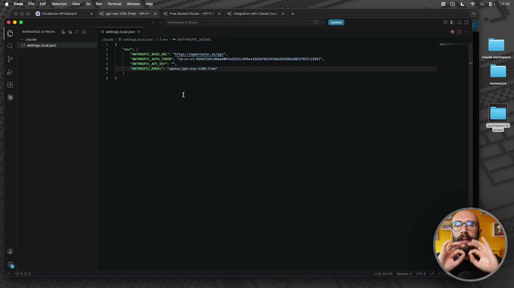
OCR: @ Code File Edi Selection View Go Run Terminal Window | Help I Fc tiri x pcontob fi) LADI XL _< Fn ee ar API x < ignote Cose + @ vonsncioimon (fa CD - 1 smile x due cate > 0 etigaiocaisn> (en > = ANTAROPIC MODEL 10 stico DG ; “mmonMSE UL”: *ntpr//operonter.a/api, 4 ANTHROPIC_AUTITOREN: "sk=0r-v1-4594f245c9b624067043231c9456c4163b184197ebb3443820S0237937C15951", Ciani è v * B
Vi faccio vedere un attimo teoricamente cosa stiamo facendo e poi lo vediamo anche all'opera. Vi dico anche le limitazioni, perché questa cosa porta con sé delle limitazioni e infatti comunque io ve lo sconsiglio. Ma ci tenevo a farvelo vedere perché qualcuno magari dice Raffi non lo voglio fare un altro abbonamento oppure a volte voglio usare l'abbonamento, a volte voglio usare quello gratis, che può essere una configurazione. Quello che sta succedendo è questo. Noi quando usiamo Cloud Code normalmente, ovviamente gli amici super tecnici mi perdonino, queste sono delle esemplificazioni, no? Sapete, per un pubblico di non tecnici per far capire che succede. Quello che facciamo normalmente è che noi scriviamo qualcosa, la richiesta, lo volete chiamare Prompt, lo volete chiamare come volete voi, la scriviamo dentro Cloud Code, Cloud Code cosa fa? Va a dialogare con i server di Antropic, quindi la casa madre, e cosa può fare? Al massimo può scegliere uno dei modelli che sviluppa Antropic, no? Sapete che noi abbiamo visto sotto in basso possiamo selezionare che modello vogliamo. Ne vogliamo uno leggero per spendere poco, ne vogliamo uno molto potente perché dobbiamo fare un task difficile,
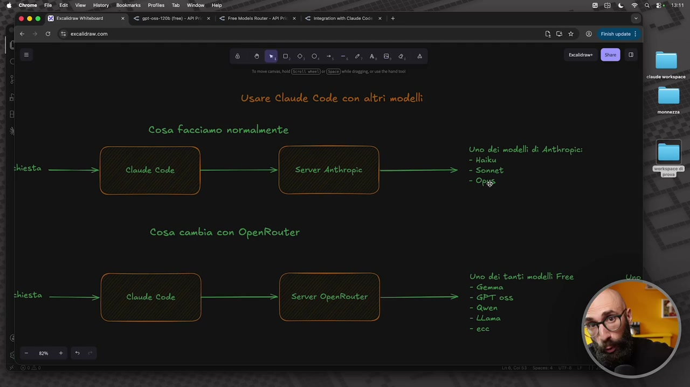
OCR: @ Chrome File Edit View History Bookmarks Profiles Tab Window Help. ° “cu CES ae ale mali ED Gucaita iabosid | x < gprose-1206 (ie) AMPI x | < Free Modo Router PIP X_| < inegration th Cine Code x | + l S 6 6 0, 0,0, -. 2, A, 8, 8, a scsito» GU © I] È Usare Claude Code con'sltri modelli luna) 3 Cosa facciamo normalmente 2\ Uno dei modelli di Anthropic: fran caga TR) ‘ - Haiku thesta — Claude Code Server Anthropie. |——_——_> - Somet 9% Cosa cambia con OpenRouter (ugo aaa o Uno deì tantì modelli Free ) gua iliceta freni claude Code |__| Server Openrouter |——> -GPToss - Qwen - LLama - ece
però la scelta è limitata, diciamo, ai modelli sviluppati di Antropic. Invece con questo trucchetto, di nuovo tra virgolette, facciamo la richiesta. La richiesta Cloud Code la manda al server Open Router, quindi non passa più per Antropic, ma passa per qua, no? Vedete? Perché gli abbiamo detto che deve rivolgersi a questo server qua. In questo modo, nel momento in cui accede a questo server, cosa c'ha? C'ha una lista infinita di modelli che puoi chiamare. Io vi lo sto facendo vedere con i modelli gratuiti, no? Quindi abbiamo messo GPTOS, ma Gemma, Lama, Quen, ma in realtà uno può usare pure i modelli a pagamento. Visto che la piattaforma, diciamo, offre una valanga di modelli, no? Io torno qua indietro, Models, e non metto più Free, no? Vi faccio vedere, qua c'è tutto, guardate, c'è Mistral, c'è XAI di Grok, c'è roba di, diciamo, di NVIDIA, di Antropic, di Google, ok? Quindi potete chiamare tutti i modelli che volete voi. Quindi avete accesso a quelli gratuiti senza spendere una lira. Questi qua invece pagate a consumo, no?
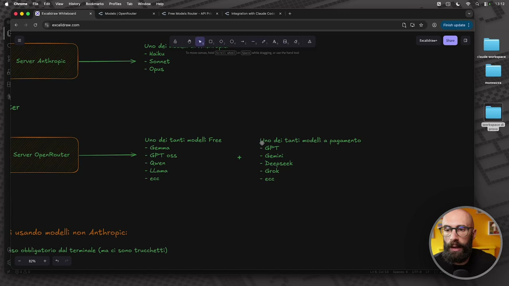
OCR: @ Chrome File Edit View. History Bookmarks Profiles Tab Window Help. © © © (RD Fucsidoniiabonrà | x Moses pente x] < Free Mode Rate API PT x € > CE ercaldramcom \ Server Anthropie - |> - Sonnet jer \ Uno dei tanti modelli Free | - Gemma Server OpenRouter |> - GPT oss Ì - Qwen ) - Lama - ecc i usando modelli non Anthropic: iso obbligatorio dal terminale (ma ci sono trucchetti) os + © < integration wii Cine Code x | + Ino dei tanti modelli a pagamento “ GPT - Gemini - Deepseek - Grok - ecc Ba ce a 8 nm
Quindi mi raccomando, se scegliete uno di quelli a pagamento, vedete sempre queste due voci qua sotto per vedere quanto vi sta costando, ok? Perché vi potrebbe costare molto più di fare l'abbonamento a, diciamo, a Cloud. Questo è quello che succede sulla teoria, ok? Ora vediamolo in azione. Diciamo, in questo momento, quello che possiamo fare è, diciamo, vi faccio vedere. Prima lo facciamo da dentro il terminale, perché non riusciamo a usarlo direttamente da VS Code, perché questo è uno dei problemi di usare un modello, diciamo, non ufficiale. Quindi mi apro un terminale qua sotto, scrivo Cloud, gli diamo, diciamo, l'accesso alla cartella, perché questa è una cartella nuova. E adesso notate qua dentro che ci dice non più che stiamo usando, diciamo, Sonnet, che stiamo usando Haiku, che stiamo usando Opus. No, mi dice, stai usando OpenAI, GPT, OS 100, e come? Lo stai usando a consumo. Dice, non hai un abbonamento. Normalmente vi fa vedere l'abbonamento di Cloud che aveva.
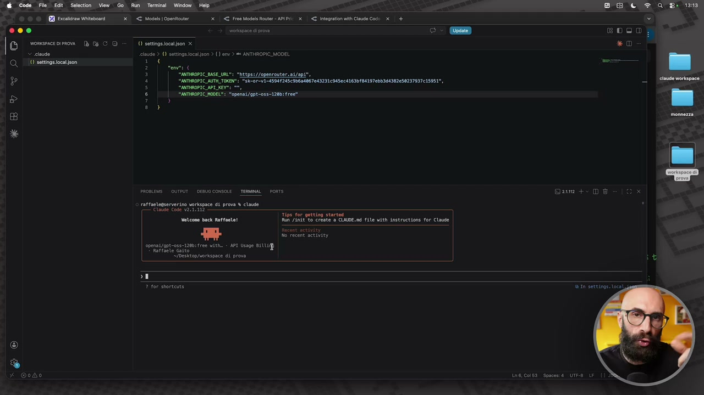
OCR: @ Code File Edit: Selection View Go. Run Terminal Window Help Ba ea 8 11 E cain tab (x < Mogin[Opentost: (x | < Fre MogieRaer-APIPY: x |< Integntin iti Cln Code x + 3 vonsnici omo (8 fa C © (I sesogaiclien x *© cause iau 1) sstingasocijon >) en mi ANTHROPIC.MODEL 10 setinossocton ur =— 3 "atimaric SE URL": "betp://openonter:as/ap a) n SAUTIROPICAUMILTOREN": "5k<0r-v1-45941245<90604867043231945614163b18419700d34438265023793718981", -. es 5 SMAMBOPICIPE REY: ©, D 6 SANTIROPIC.HODEL®: “opens i/gpt-05s-120b1 free" fe È è è * raffaetezserverino vorkspace di prova & claute Tip fer prog parti Velcone back Raffaete! Rum Vinte to creste a CLAUDE.md file with instructions for Claude open gponaz0:fe th + APT ge IP foeskton/uorkspace di prova è
Quindi, se vedete questa stringa qua, significa che è andato tutto a buon fine. Diciamo, se volete fare proprio una prova aggiuntiva, potete dire qualcosa del genere. Che modello sei? Diciamo, avevo questa domanda un po' stupidotta, la faccio giusto per farvi vedere che poi, effettivamente, dietro le quinte, no? Quello che sta succedendo, torniamo qua, e la chiamata viene fatta al modello che abbiamo scelto noi. Adesso sta, diciamo, sta partendo. Diceva, sono alimentato dal modello OpenAI, GPT, Nota, Cloud Code, può passare a modelli Opus, Sonnet, Haiku, per altre operazioni. Perciò vi dicevo, una soluzione potrebbe essere anche un ibrido, dove uso quello gratis per alcune cose e quello a pagamento per altro. Quindi, diciamo, io qua adesso gli posso far fare qualsiasi cosa. Tipo, che ne so, abbiamo visto, per esempio, l'esempio di creare un file semplice, no? Quindi faccio, creami un file .Md dove dentro ci metti, che ne so, 5 ricette di primi italiani famosi.
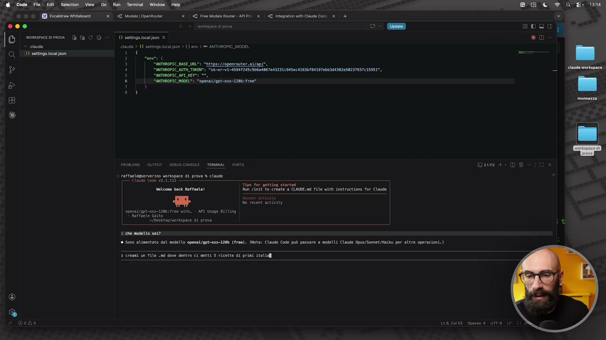
OCR: @ Code File Edit Selection View Go. Run Terminal | Window Help B © € Bo tate I incaiiam inbonri (x < Models pentote = x |< Free Modena - APP x | < Integration th Ciusa Code x + n © morsnciormon Mb fa CO > li satogniocaison x Q [1 sotingasocation id = , ì “Mmm0e1c_pAsE_UeL*: *httpsi//openrouter.ai/0p 1 i SANMIADPICAUMITOREN": >5k-or-v1-45981245CO0A0HB670A32I1COSECATEIO TAL 19TEDRIITE2ESOZITITT 13981", s SAMBOPICAPI_REV: ©, 6 PANMIROPICHODEL*: “opensi/apt-oss=1286: ree* la ) 8) raffaetezsenierino vorkspace di prova & claude Ti6s for getting sunt nelcone back Raffaete! fun vinte to creste openai/gpt-oss 12001 free with + APT Usage Bitti Rafforte alto -Soesktop/vorkspace di prova t Eldupe.mi dite vsth snstructione for Clause i ehe mado set? @ Sono alinentato dol modello openai/gpt-oss-1205 (fre). (Nota: Claude Code può passare » modelli Claude Opus/Soonet/Maika per altre operazioni.) 3 creani un File ind dive dentro ci netti S ricette di primi italia
Esempio fatto veramente al volissimo, diciamo, che ha poco senso, però per farvi vedere subito, è partito. Cioè, questo è Cloud Code da questo momento, sta già scrivendo nei file, lo facciamo subito lavorare, no? Quindi adesso qua sulla sinistra, nella nostra cartellina, ci creerà questo file e dentro ci metterà, diciamo, questo output. Me l'apro pure qua per farvi vedere, no? Alla fine la cartella sulla quale stiamo lavorando è questa, vedete? Qua ci abbiamo solo una visualizzazione più comoda, perché è più facile vederlo qua, che andare ogni volta ad aprire. Mi dice, mi vuoi autorizzare a scrivere? Sì, sì, certo che ti autorizzo. Eccola qua, ricette primi italiani .Md. E qua abbiamo la nostra bella ricetta. Spaghetti alla carbonara, risotto alla milanese, lasagna alla bolognese, penne all'arrabbiato, tortellini in brodo. Mi sta venendo fame. Ve l'ho fatto vedere nel terminale, perché, dice Raph, ma scusami, noi non abbiamo detto che il terminale non lo usiamo? Usiamo questa bella interfaccia di VS Code che ci permette di usare Cloud Code in modo così carino? Sì, ma purtroppo non funziona bene quando andiamo a utilizzare modelli non ufficiali.
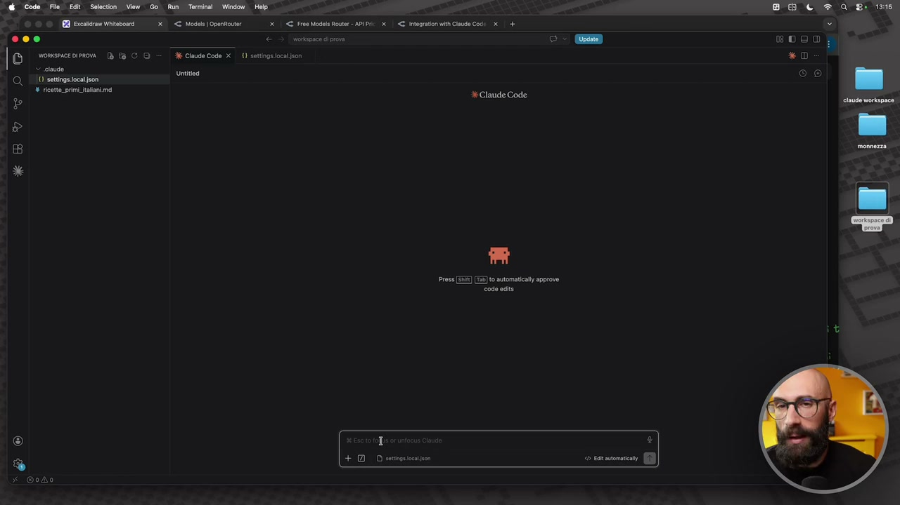
OCR: @ Code Fio Edit Selection View Go Run Terminal | Window Help [E I XL < free Made Roster APP © vorsiceniom Db fa CO > d Ciudecode x 1 stingaicaion 10 settingssocatison Dia 8 ricotta primi Jabani me < integrazioni Ciad Code x + & Claude Code Press (SS) o automatica prove cod ite o cea 8 1316
Per esempio qua faccio semplicemente ciao. Vedete che adesso, diciamo qua nella chat, lui prova a lavorare e poi a un certo punto va in errore. Questa cosa con alcuni modelli funzionicchia meglio, con altri meno. Questa roba qua dice, diciamo, il tipo di output non lo supporto, non lo gestisco bene. Perché? Perché quando andiamo a usare modelli che non sono quelli di Antropic, si incarta su alcune cose. Per esempio si incarta sulla parte di reasoning, quindi la parte dove deve ragionare, deve pensare. Quindi tutto quello che vi ho fatto vedere potete usarlo. Ricordatevi che la prima grande limitazione è che lo dovete usare dal terminale. Io vi ho già spiegato che non cambia niente. Il terminale graficamente può spaventare un po', ma alla fine questa roba qua è come se fosse un terminale semplificato. Però siccome questa roba non la dice nessuno, ok? Mi fanno vedere tutti quanti i video, ah ecco come ti faccio usare Cloud Code gratis.
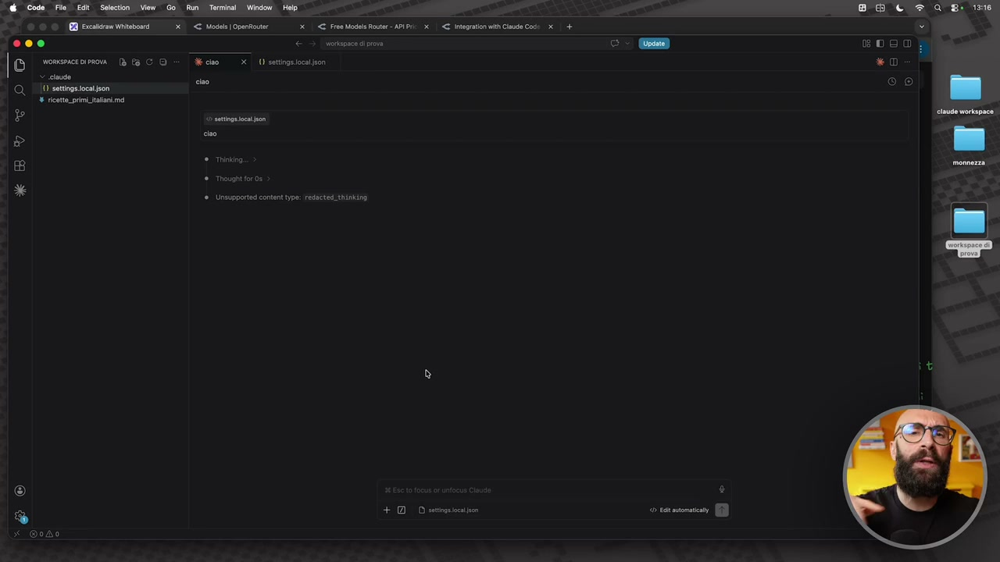
OCR: @ Code File Edi Selection View Go. Run Terminal Window. Help EB Esco iabonrd () seta caljson 8 ricotta primi Jatani me < adele | Opongouter x < free Mode Reuter APP deciso x (1 settogatocaliion cio 10 retina cl po < integration wi Ciad coi + BH CF Bo se
Certo, però poi 50% delle funzionalità non vanno. E infatti qua ci ho messo un bello schemino per dirvi, sappiate che avete questa scelta di usarlo con un modello gratuito. Ma che succede? Allora, ecco alcune cose. Nel momento in cui sto registrando, e poi magari tra qualche mese alcune di queste sono state risolte, se ne sono aggiunte altre, allora innanzitutto non riuscirete a usare InVS Code, dovete passare per il terminale. In rete ci sono anche dei trucchetti per farlo funzionare InVS Code, si può installare un proxy e così via, ma è roba un pelino più avanzata che non ve la consiglio se siete alle prime armi. Cioè la cosa che vi consiglio di fare, se proprio volete usarlo con il modello gratuito, fate così, New Terminal, Cloud, lo lanciate e Cloud è partito. Semplicemente l'ho stato usando gratis con GPTOS o con Lama o con Quen o con quello che volete voi. Il Thinking Mode di Cloud lo perdete. Ovviamente una delle cose potenti di alcuni di questi modelli è che hanno la modalità
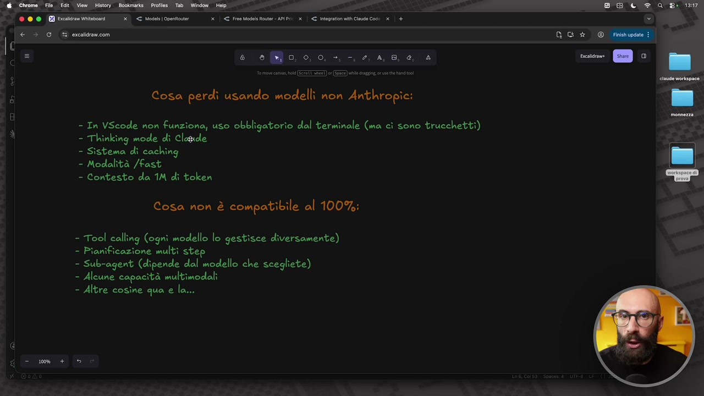
OCR: @ Chrome File Edit View History Bookmarks | Profiles. Tab Window. Help. B © € QU B 1317 © © © (DR tassi iiabonià x < Moses] pentter x] < Free Made Rutr API Prix. |
Oggi parliamo di business online, prodotti digitali e mindset. Oggi parliamo di business online, prodotti digitali e mindset.
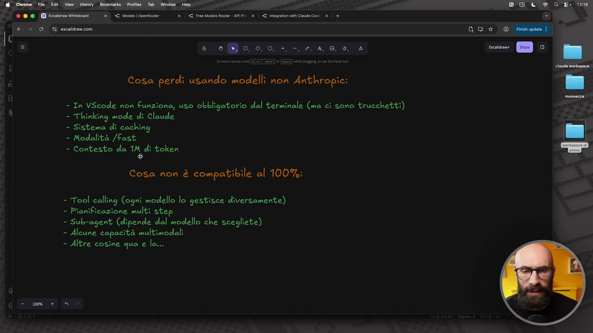
OCR: @ Chrome Fia Edit View History Bookmarks. Profiles. Tab Window Help. B © cs a Bg © © © ED tacsiioniinbonià | x < Moses Openteter x 1 << Free Made Rauter API Pr x. < Integration wi Ciad Code x | + < © CRIS ae O mami. l È Tea vara a — © gn 5 Cosa perdì usando modelli non Anthropic: Dea) - In VScode non funziona, uso obbligatorio dal terminale (ma cì sono trucchetti) - Thinking mode di Claude - Sistema di caching - Modalità /fast - Contesto da da token Cosa non è compatibile al 100%: - Tool calling (ogni modello lo gestisce diversamente) - Pianificazione multì step - Sub-agent (dipende dal modello che scegliete) - Alcune capacità multimodali - Altre cosìne qua e la...
Oggi parliamo di business online, prodotti digitali e mindset. Queste cose le perdete. Queste invece non sono proprio compatibili al 100%. Queste cose le perdete. Queste invece non sono proprio compatibili al 100%. Il tool calling, questo lo vedremo più avanti, è nelle lezioni successive. Ma quando voi andate ad utilizzare Cloud Code, una delle cose potenti è che Cloud Code può chiamare applicazioni per fare cose. E quindi diciamo, deve per esempio sbobbinare una riunione di due ore che avete fatto, cioè il file mp3 sul desktop, lui può chiamare un tool che fa questa cosa,
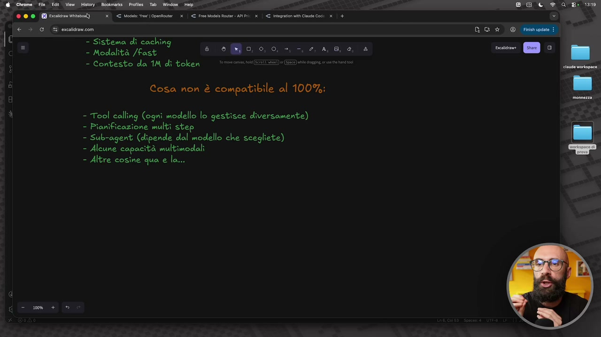
OCR: @ Chrome File Edit View. History Bookmarks Profiles Tab Window Help. Ba e a 8 1 © © © /EG Fica bn E < ro tr] pene >| < Frvatgo aa -A0I9 x | integration tina Cose | + € > SE ercaldrancom GR E O. fini - Sistema di caching - Modalità /Fast dI ES EEACLIE re Do Lun - Contesto da 1M di token Cl ciaudo workspace Cosa non è compatibile al 100%: - Tool calling (ogni modello lo gestisce diversamente) - Pianificazione multì step - Subragent (dipende dal modello che scegliete) - Alcune capacità multimodali - Altre cosìne qua e la...
prende l'audio e lo trasforma in testo. La pianificazione multi-step, pure questa la vedremo più avanti nel corso, ci sono delle lezioni. Quindi il fatto che prima di agire si fa un piano. I sub-agent, anche questo non vi preoccupate, sono tutte cose che vedete nelle lezioni più avanti. Cioè che quando devono fare dei task in parallelo, lancia degli agenti e può velocizzare l'esecuzione invece di farli in serie. Dice ok, c'hai questi dieci task da fare, lancio cinque agenti che ne fanno due alla volta. Alcune capacità multimodali, alcuni modelli per esempio non gestiscono bene il fatto che voi caricate una foto e poi gli date un'istruzione testuale, oppure gli caricate come dicevo prima un file mp3, un file video, questa è una modalità multimodale dove mischiamo testo, video, audio, immagini e così via. Qua ho scritto non è compatibile al 100% perché dipende tanto dal modello che scegliete. Cioè alcuni di questi modelli gestiscono meglio alcune cose, altri le gestiscono male. Quindi diciamo le performance possono cambiare molto da questo punto di vista.
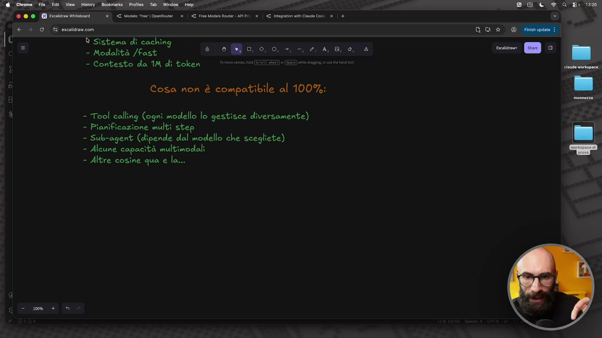
OCR: @ Chrome File Edit View History Bookmarks Profiles Tab Window Help. Bo ea 8 10 © © © E Said bivio MO < Modus "ire| Opeaatr x | < Freo Models Route - APP x SEEN 7 ue QU le mR £ È Sistema di cachin = È ‘I . & rame ("] = - Modalità /Fast do IAA reco - Contesto da 1M di token claude workspace Cosa non è compatibile al 100%: - Tool calling (ogni modello lo gestisce diversamente) - Pianificazione multì ste, - Sub-agent (dipende dal modello che scegliete) - Alcune capacità multimodali - Altre cosìne qua e la... dun
Questo per totale trasparenza, per farvi capire che questa lezione vi spiega come usare Cloud Code in modo gratuito, ma nel resto del corso io continuerò a utilizzare Cloud, quindi il modello di Cloud, quello ufficiale di Antropic e consiglio anche a voi di farlo. Potrebbe essere utile però qualcuno che magari ha preso il corso e non vuole pagare l'abbonamento, può comunque diciamo smanettare per le prime cose, poi dopo dice vabbè Raph fammi fare un po' di prove, poi dopo decido se voglio pagarmi l'abbonamento a Cloud. E ha molto senso come cosa. Oppure in alcuni casi potete volere un ibrido, dice vabbè Raph io mi sono fatto due spazi di lavoro, uno per le cose professionali e pago l'abbonamento e uno magari per le cose personali e non mi va di pagare l'abbonamento, non la voglio utilizzare un modello gratuito. Anche questa è un'ottima scelta che fanno in tanti. Vi aggiungo due cosine che nessuno dice mai. Vi lascio ovviamente il link, diciamo quello ufficiale di Open Router, dove spiegano proprio come si configura tutto.
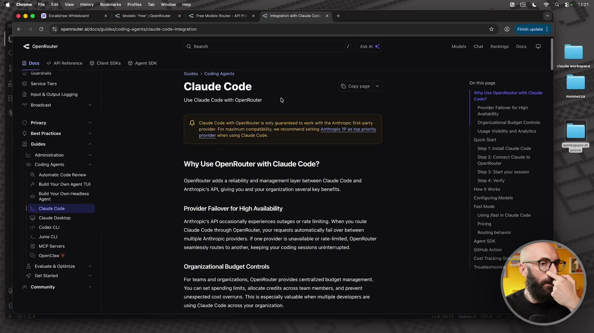
OCR: @ Chrome File Edit View. History Bookmarks Profiles Tab Window Help. © © OO E Scion irene | < sto tr] Open >| < Freni ar - 019 ita i Cin Godi + € > @ E openouteraliocs/guidesicoding-agents/dlaude-code-inegrtion Coding Agent, Claude Code © copypase + Use Claude Code with OpenRouter {© DI. Claude Code with Openuter is only quaranteed to work iti the Anthropi first-party provider. For maximum compatibili we recommend setting Anthropie 1P 5 top priority provider when using Claude Code. Why Use OpenRouter with Claude Code? OpenRouter adds a reliability and management layer between Claude Code and Anthropic's API, giving you and your organization several key benefits. Provider Failover for High Availability ‘Anthropic's API occasionaliy experiences outages or rate limitng. When you route Claude Code through OpenRouter, your requests automatically fal over between multiple Anthropic providers. If one provider is unavalbie or rate-limited, OpenRouter ‘seamiessiy routes to another, keeping your coding sessions uninterrupted. Organizational Budget Controls For teams and organizations, OpenRouter provides centralized budget management. You can set spending limits, allocate credits across team members, and prevent. unexpected cost overruns. This is especialiy valuable when multiple developers are using Claude Code across your organization. Ba e a Bona SETTI ‘chat Rankings Docs DD lussi] ce ela mo = Provider Faliovr for High Avalabity Organizational Budget Controls Quick Stan | Step 2: Connect Claude to OpenRouter Step 3: Start your session Stop: Vriy Contiguring Models Fast ode Using fast in Claude Code Pricing Routing behavior Agent SDK Githiub action Cost Tracking Si
Perché allora a un certo punto spiegano anche una cosa importante, adesso non mi ricordo a che altezza sta, cioè i limiti. Non è che voi andandosi i modelli gratuiti, fatemi vedere se lo trovo qua sotto, no forse allora in un'altra pagina. Vabbè scusatemi, magari, vabbè comunque è una di queste pagine, dopo ve la linko qua sotto. Non è che voi andando sui modelli gratuiti lo usate illimitato, no, ci sono dei limiti altissimi, ve li voglio far vedere, Open Router Free Limits. Perché sono molto molto bassi, sono molto molto bassi, eccolo qua, sono 20 richieste al minuto. 20, Vediamo dove lo dice, eccolo qua. Potete fare 20 richieste al minuto, avete delle limitazioni, quindi quando usate quello gratuito, quello che loro vi consigliano di fare è di mettere un po' di credito sull'account. Se mettete un po' di credito avete fino a mille richieste al giorno, quindi anche se non li volete spendere quei soldi,
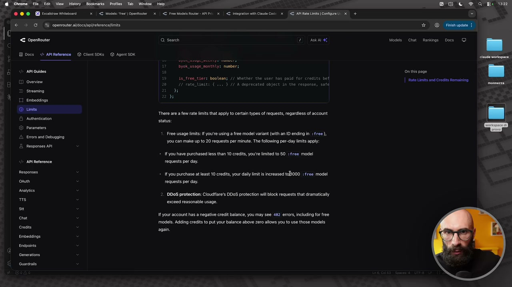
OCR: @ Chrome File Edit View History Bookmarks Profiles. Tab Window Help. Bd cea 8 112 COMIT ERO-CTIrT<="S5 mo E ESTATE ape arcata @ o @ rv È < OpenRouter Q Search 40 ASKAISÈ Models Chat Rankings Docs QD lia armi ) A li noce @ Limits There are a few rate limits that appiy to certain types of requests, regardless of account È Autnenticaton E Parametere Free usage limits: If you're using a free model variant (with an ID ending in : free), Erre and Debugging you can make up to 20 requests per minute. The following per-day limits appiy: Responses API + If you have purchased less than 10 credits, you're limited t0 50. : free model API Reference requests per day. Lissagisimani * If you purchase at least 10 credits, your daily imit is increased tal1000 onu requests per day. Arabica sb DOS protection: Cloudfiare‘s DDOS protection wil block requests that dramatically no exceed reasonable usage. su pa If your account has a negative credit balance, you may see 402 errors, including for free models. Adding credits to put your balance above zero allows you t0 use those models credito again Embodeings Endpoints Generations È Guardali
metteteci tipo 10 dollari e avete questo limite un po' più alto, potete fare mille richieste al giorno. Quindi sappiate che quando lo andate a utilizzare gratis, questo non ve lo fa vedere nessuno, dopo 4, 5, bubum, babà, avanti indietro, avanti indietro, vi dirà che avete finito le chiamate gratuite per il giorno, ok? Di nuovo, non ve lo fa vedere nessuno perché fa molto fico dire, lo faccio usare gratis. Sì, gratis, ma con tante limitazioni. Altra cosa importante, e poi abbiamo finito per questa lezione, questi modelli qua a volte potrebbero essere sovraccarichi, in alcuni giorni potrebbero non funzionare, per esempio io ho utilizzato tanto Gemma, di quelli gratis di Google, e Gemma mi andava spesso in errore, la sera era inutilizzabile perché lo usavano tutti quanti. Allora, c'è questa voce che potete utilizzare, diciamo mettete un generico, open router, come tipo di modello, mettete open router slash free, ok? Che non è un nome di un modello, vedete?
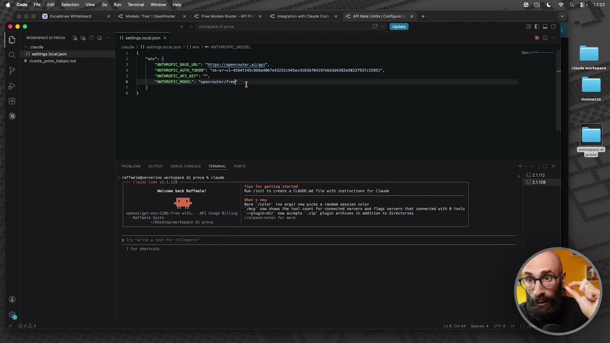
OCR: @ Code Fio Edit Selection View Go. Run Terminal | Window Help B © cs QQ B 1328 < Made | Opec -_X_| < Fre Models Router - API Pri x_| < Integration wi Claude Codex /< AFRatelime| Conigli x + EB cas donna x O vorsucinimo 1 CO lì settica x *D Q (0) sotingasocation wa n= 8 ricette, primi aan zi , n ; “Mm0e1c_pAsE_URL*: *httpsi//openrouter.ai/o ba È i SANMADPICAUMLTOREN" "5k-01-v1-ASBA12ASCHPA0ABETEAI2IICHSECATEIOIAA19TEDOIIASE2ESOZIT9ST139S1*, DI ica 5 SAMBOPICAPT_REV: ©", S 6 mon ODE: “openranter/trd pi È , Db) t (tn, D21n2 21128 ratfaetezserierino vorkspace di prova A claute "i GRALE.ma Pie vien instrvettone for Clause Tipo for qertima netcone back Ratfaete! pu vinte to cren e are ‘Vestore (no args) nov picks a randon session color SIREp God Shows the tool Count fot Connected servers and flags servers that connected with @ tools pensi /gptoss1200: oe ult + API Usage Bitting | plugincatr nou ccopte. 2ip' Blogs arenives in ssgition to directors Rafforto alto Jrateste notes for sore >
È un nome speciale per dire, diciamo, state dando a open router la scelta di quale modello gratuito utilizzare. Quindi in pratica quello che sta succedendo è che qua in mezzo voi gli dite generico, guarda io non voglio usare Gemma o GPT OS, ti dico solo voglio usarne uno gratuito, adesso fai tu. Ok? Quindi quando voi andrete praticamente a fare le vostre chiamate dentro la chat, lui ad ogni chiamata potrebbe una volta chiamare Lama, una volta chiamare GPT OS, una volta chiamare Gemma, in base a come sono i carichi, ok? Anche questo, documentazione ufficiale, vi lascio sempre il link qua sotto nel corso, così voi lo potete vedere con calma. Ve lo faccio vedere, diciamo qua ci chiudiamo il terminale e lo riapriamo. Lanciamo di nuovo Cloud e vedete, diciamo qua adesso vi dice open router slash free. Questo è quanto per questa lezione, questa cosa vi lascio qua sotto così potete fare un copy and colla molto facile
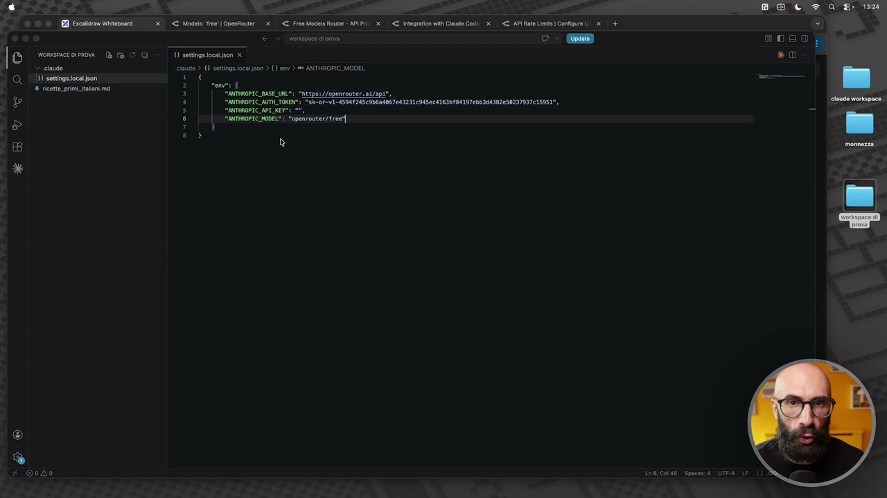
OCR: Ba ce a 8 132% EB Pucairna itabonid (x < Mo "tn | pensate | < Free Made Rsuter API Pri x. < ingrato wi Claude Code X_| < AP\RateLimis| Conte Ui x + O voseionon ® (I settings socaison x v cause nada > (0 setting clan () on > = ANTHROPIC.MOOEL 10 setingssocton nai -- Leal icotta, piani mel 2 | fn 3 “n@nGOPIC BASEL": “ntips:/Vopenrouter.ai/opi*, 12) i CAMION": "bk-0r-V18B812I5EOOGNO8712231 COSENTINO 18881", cine worapace ‘ p È * B Cd ©
e come sempre vi do anche questo schema da scaricare se volete tenerlo a colpo d'occhio per capire bene cosa stiamo facendo.